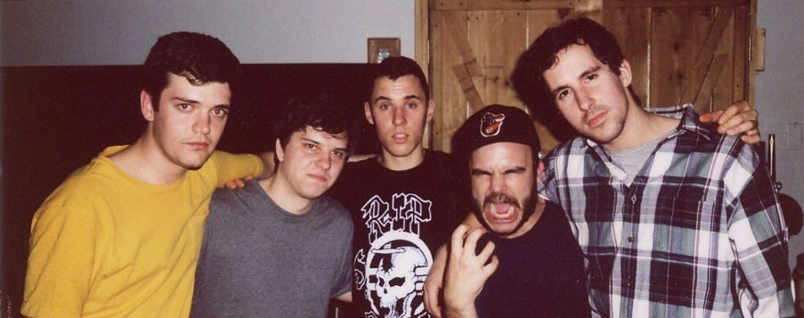
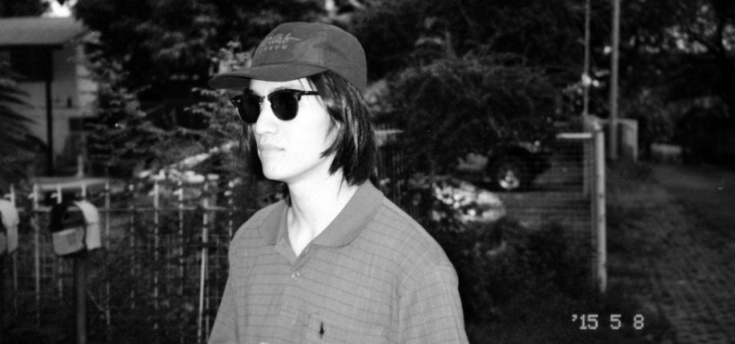
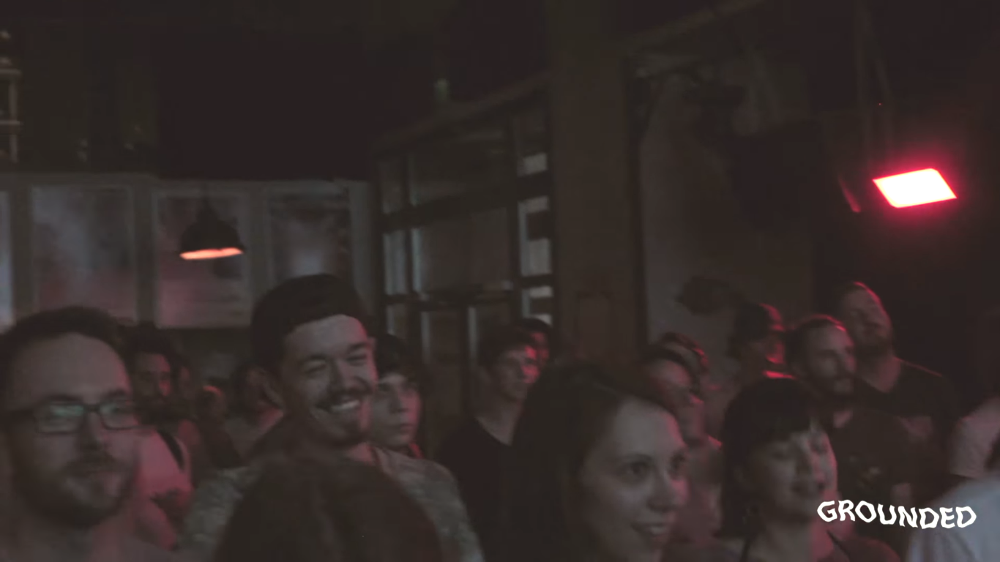

Grounded Talk!
Gondolatok a föld alól

A BadBadNotGood zseniálisan tud gyászolni
Vélemény az I Don't know című music video-rólJúlius 7, 2018
A BADBADNOTGOOD túlszárnyalja a sok tehetségtelen starbucksjazz zenekar nyálrohamát és új koncepcióba helyezi a jazz nehezen megfogható szellemét. Csodálatosan rugaszkodnak el a konzervatív elemektől, unortodox hangzást elérve reformálják meg a jazzt. Ők azok a srácok, akik anyukádnak a kedvencei a barátaid közül, de mégis velük szívsz esténként egy cofee shopban.

A Fülöp-szigeteki disztrópia
Manila Ice zseniális vizuálja Június 30 , 2018
Az EYEDRESS egy Fülöp-Szigeteken, a totalitárius diktatúra és drogháború közepén tevékenykedő, new school és indie elemeket vegyítő producer, aki hatalmas bátorsággal énekel a személyi szabadság és a nyugatias polgári értékek szellemében, a fölé magasodó pszichopata és szadista gecik ellen. Ott áll ki az emberi jogokért, ahonnan a szőrös hónaljú social justice warrior szabadbölcsészek az első repülővel menekülnének vissza a gondoskodó Apple, és az apai Facebook által felügyelt safeplace barlangokba.
Népszerű
-
 Pleux-Tree Tops
Pleux-Tree Tops
A Grounded büszkén mutatja be az egyik oszlopos tagunk Pleux, saját zenéjét és vizuálját. -

Perrin seggrázós EP-je
Perrin (Palotai Soma) a Toldiban adta elő a debutáló EP, iszonyat forró dalait. -
 Kitörni a fénybe
Kitörni a fénybe
A Grounded In The Nature kiragadja a producereket a comfort zónájukból.

Tagek
Grounded works fesztivál külföld Budapest podcast Ideas poén hip-hop belföld music video alternatív live stream VHS